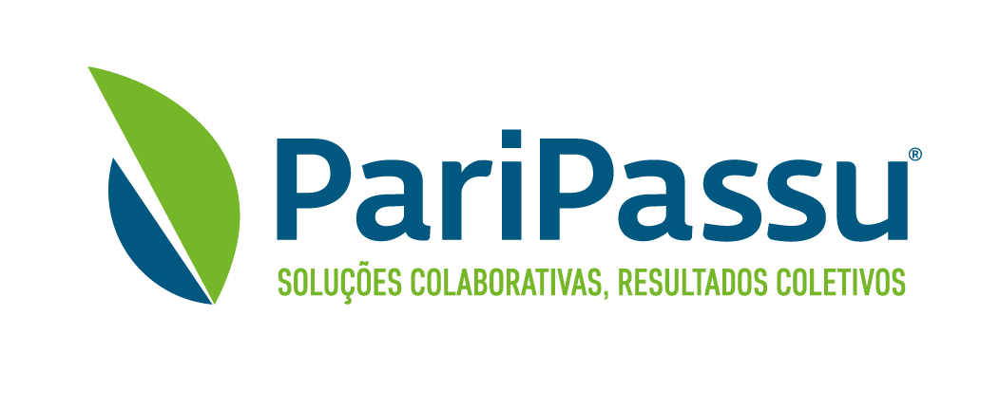

<div class="panel-body">
      <div class="col-md-12">
            <h2>Experiências Profissionais</h2>
            <p>Desde os 14 anos passei por diversas empresas antes de começar minha carreira como programador. Em agosto de 2015 abri como MEI 
                  uma empresa de limpeza de vitrine, trabalhei durante 3 meses como MEI até conseguir meu primeiro estágio.</p>
            <div class="col-md-4 col-sm-4 col-xs-4">
                  
            </div>
            <div class="col-md-8 col-sm-8 col-xs-8">
                  <h3>Paripassu - Novembro de 2015 à Abril de 2017</h3>
                  <p>Desde os 14 anos passei por diversas empresas antes de começar minha carreira como programador. Em agosto de 2015 abri como MEI 
                  uma empresa de limpeza de vitrine, trabalhei durante 3 meses como MEI até conseguir meu primeiro estágio.</p>
            </div>
      
      </div>
            
		
</div>